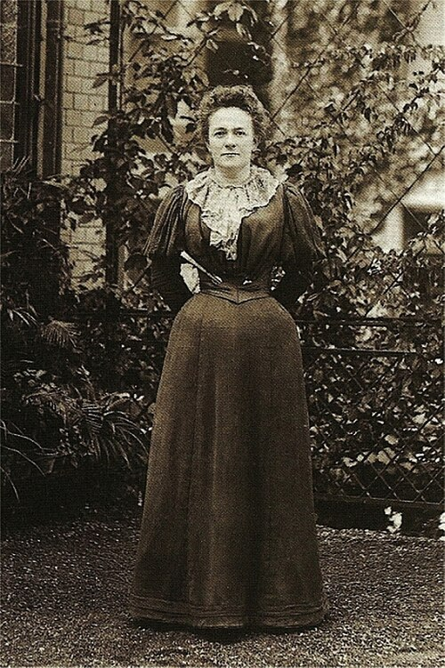

Home
Welcome to the
CLARA
ZETKIN
Internet
Library

"Only in conjunction with the proletarian woman will socialism be victorious."
— Clara Zetkin, 1896
Featured work
Only in Conjunction With the Proletarian Woman Will Socialism Be Victorious
C O N T E N T S
--1896--
Only in Conjunction With the Proletarian Woman Will Socialism Be Victorious
--1923--
Fight Fascism!
The Struggle Against Fascism
Fascism
--1924--
Reminiscences of Lenin